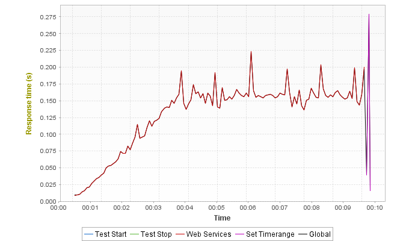
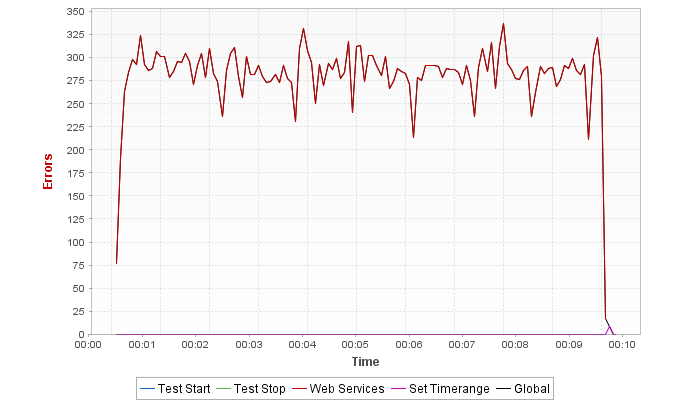

Populations
Graphs


Statistics
| Population | Total requests | Average requests/s | Avg. Page res. time | Error rate |
|---|---|---|---|---|
| Test Start | 1 (0.001%) | 0.0 | 0.208s (+29.2%) | 0% (-100%) |
| Test Stop | 1 (0.001%) | 0.0 | 0.044s (-72.67%) | 0% (-100%) |
| Web Services | 169788 (100%) | 275.2 | 0s (-100%) | 20% (-0.004%) |
| Set Timerange | 31 (0.018%) | 0.1 | 0.169s (+4.97%) | 25.8% (+29%) |
| Global | 169821 (100%) | 275.2 | 0.161s | 20% |